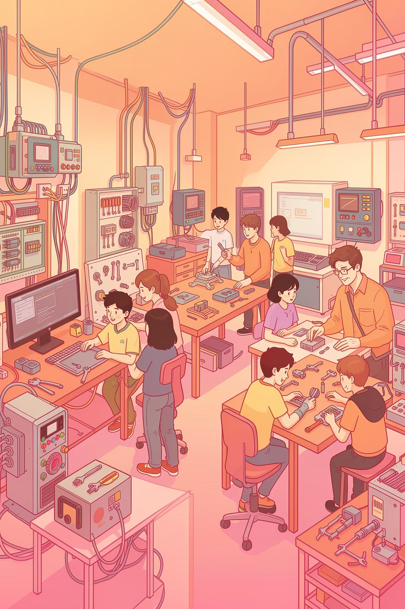
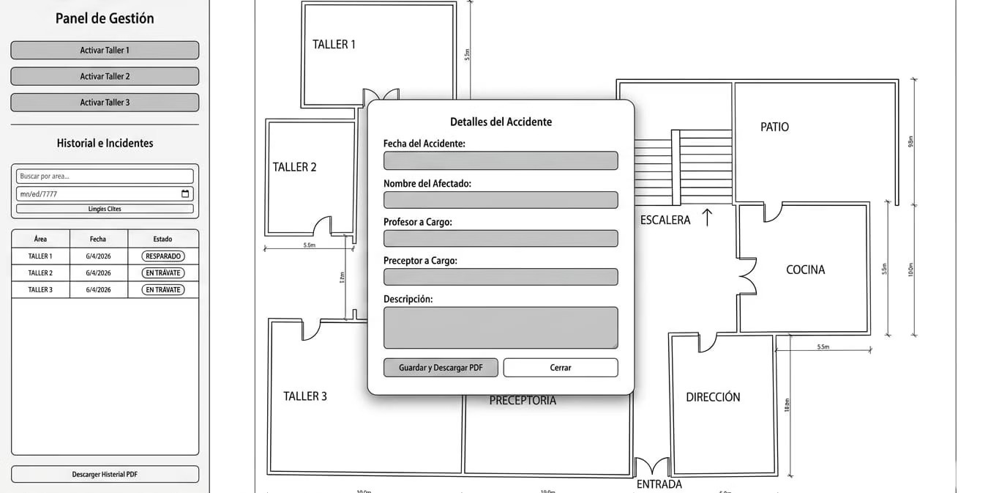
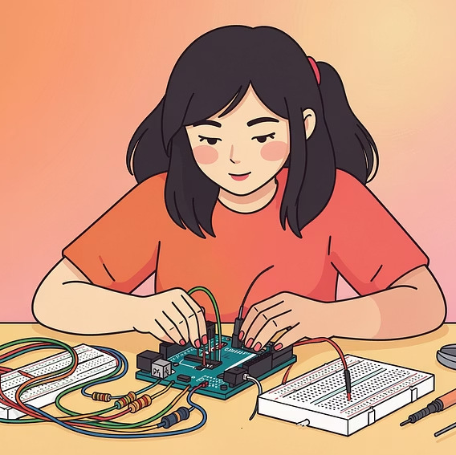
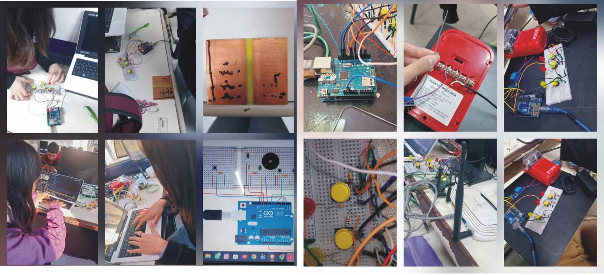
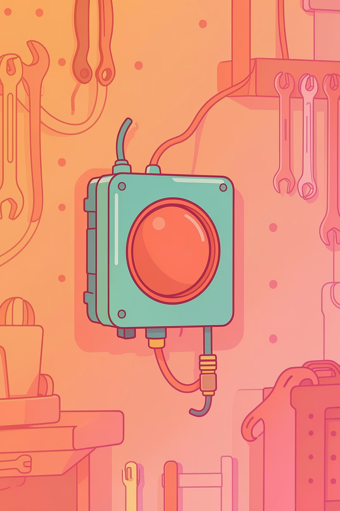
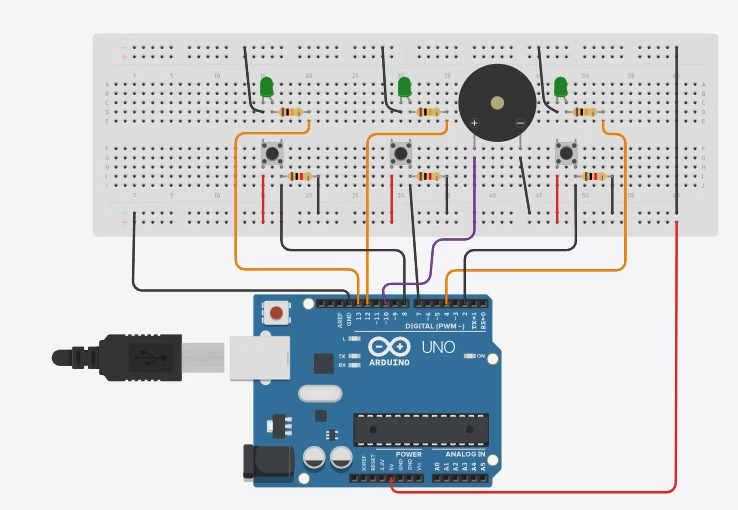
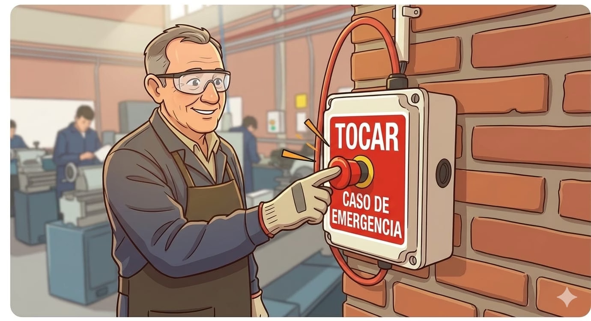
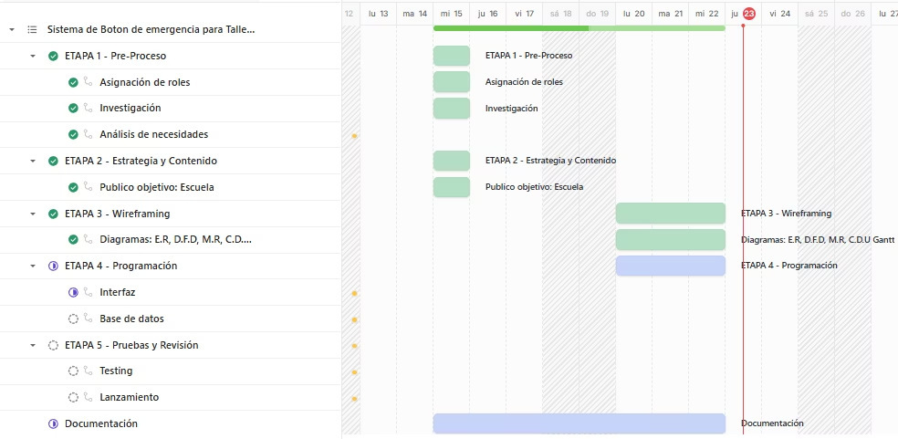
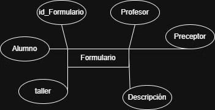
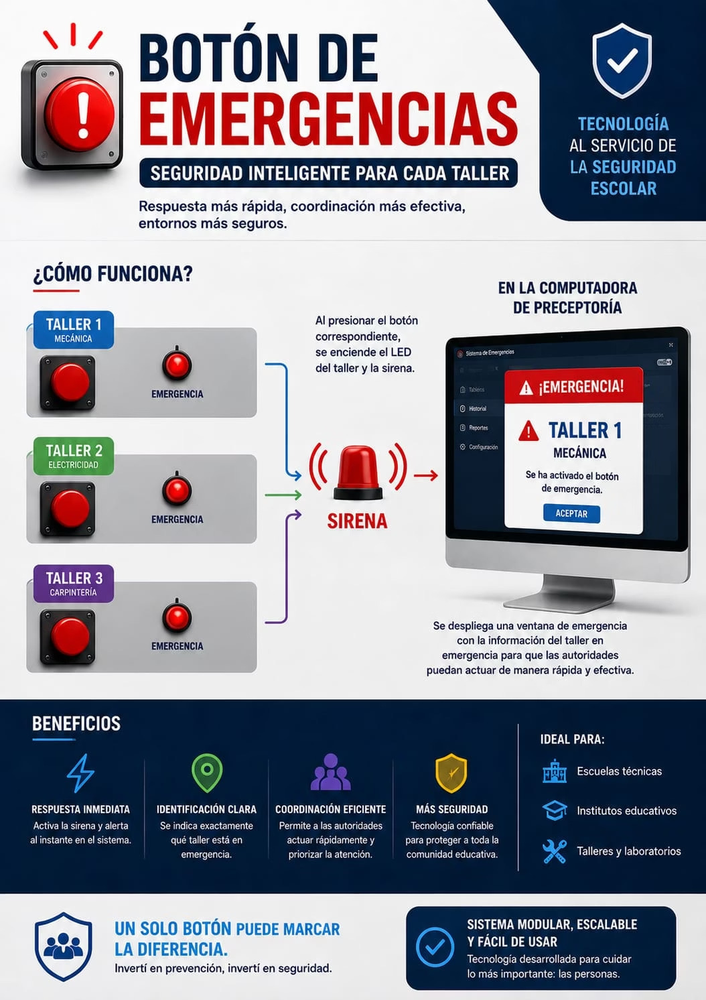

Riesgo constante
Equipos eléctricos y maquinaria pesada operando de forma simultánea.
EEST N° 5 · Berazategui
Sistema Automático de Alarma
para Talleres
Alerta temprana e interrupción preventiva de potencia para los talleres escolares. Una respuesta automática, instantánea y documentada ante cada emergencia.

01 · Contexto y problemática
Los talleres escolares concentran maquinaria, herramientas de corte y tableros eléctricos. Ante una emergencia, cada segundo cuenta.
Equipos eléctricos y maquinaria pesada operando de forma simultánea.
La alerta verbal viaja por cadenas informales y demora minutos en llegar a preceptoría.
Los incidentes no se documentan, lo que impide analizarlos y prevenirlos.
La dependencia de medios de comunicación informales genera demoras críticas que pueden agravar cualquier situación de riesgo.
02 · Objetivos, metas y alcance
Objetivo general
Diseñar e implementar un sistema electrónico de alerta temprana e interrupción preventiva de potencia para los talleres de la EEST N° 5, informando instantáneamente en preceptoría mediante señales sonoras y una interfaz web en tiempo real.
Alcance actual · prototipo
Un ESP32 centralizado simula las señales de emergencia y valida el funcionamiento de la red, los relés y la interfaz web.
Proyecto institucional final
Topología distribuida con un ESP32 independiente por taller, manteniendo una única central receptora en preceptoría.
03 · Arquitectura y flujo
Cuatro etapas, una respuesta inmediata y sin intervención manual.
Nodos emisores · talleres
Red local
Central · preceptoría
Salidas y monitoreo
El enlace cableado hasta preceptoría protege la comunicación frente al ruido electromagnético de los motores.
El pulsador hongo del taller es accionado por el operario.
El ESP32 envía la trama por Wi-Fi al router y de allí, por Ethernet, al servidor.
Arduino valida el origen, activa la sirena y corta la máquina afectada durante 5 s.
La interfaz web pasa a rojo e indica el taller y el estado de energía.
Las máquinas reciben energía a través del Relé 2 y la sirena de preceptoría permanece inactiva.
El ESP32 envía la orden; el Relé 1 dispara la sirena y el Relé 2 corta la energía del taller emisor durante 5 segundos.
Cumplido el temporizador, el Relé 2 realimenta la red y el sistema retorna a Standby.
04 · Desarrollo técnico e interfaz
| Componente | Función principal | Cantidad / tipo |
|---|---|---|
| ESP32 Dev Module | Emisor Wi-Fi y lectura de pulsadores | 1 (prototipo) |
| Arduino Uno + Ethernet Shield | Servidor central en preceptoría | 1 |
| Módulo de relé 2 canales | Sirena y corte de potencia (5 s) | 1 |
| Router Wi-Fi + cable UTP | Infraestructura de red local | 1 + UTP |
| Pulsadores hongo, LEDs, resistencias | Señalización y accionamiento local | 3 / 3 / 6 |
| Sirena / baliza luminosa | Alerta sonora y visual en preceptoría | 1 |
| Fuentes 12 V, 5 V y 3,3 V | Alimentación de lógica y etapa de potencia | — |
| Placa de circuito impreso (PCB) | Montaje ordenado y permanente | 1 |
Firmware desarrollado en Arduino IDE (C++) con bibliotecas Wi-Fi, Ethernet y sockets asíncronos.

05 · Planificación y equipo

Líder de proyecto y desarrollo de hardware: circuitos, lógica de control y diagrama de Gantt.
Analista de datos y documentación: diagramas E-R, casos de uso, modelo relacional, wireframes y DFD.
Diseño gráfico y frontend: interfaz de usuario y experiencia estética.
Trabajo colaborativo en todas las etapas; se detallan las responsabilidades principales por área.
06 · Evaluación, recursos e impacto
Materiales: microcontroladores, relés, router, cable UTP, componentes discretos, placas PCB, pulsadores y sirena.
Humanos e inmateriales: horas de taller, capacitación en C++, HTML/CSS, electrónica de potencia, redes TCP/IP y orientación docente.
Proyecto escolar autogestionado de prototipado técnico.
Total estimado · componentes
$108.200Registro gráfico
Imágenes de la documentación del proyecto SAT: maqueta, circuitos, ensayos y material de difusión.







Conclusión
«Un taller seguro no es el que no tiene accidentes, sino el que sabe cómo reaccionar ante ellos».
Alerta inmediata · corte preventivo · respuesta documentada.
Arrieta, Guadalupe · Peralta, Alondra · Ruiz Díaz, Selena
Descargar la presentación